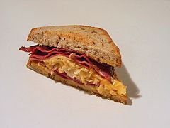

Sandwich

Info = The sandwich is one of the most popular quick dish on the planet, it is rich in carbs, protein and fat and its a great dish that takes less than 10 minutes to make.
Ingredients:
2 toasts
1 square of cheese
200 grams of salami
mayoneese
ketchup
Instructions
Put the 2 toasts in a toaster, or if you dont own one you can fry it on a pan. Meanwhile take your salami, mayoneese, ketchup and cheese out.
After your toasts are ready and crispy, put the sliced salami on the bread following with cheese and then mayo/ ketchup.